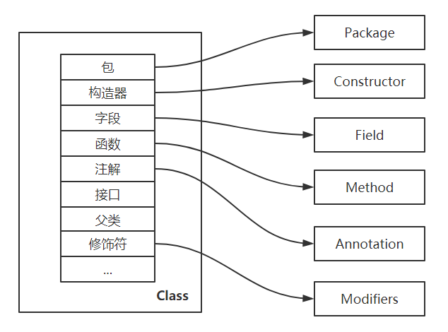
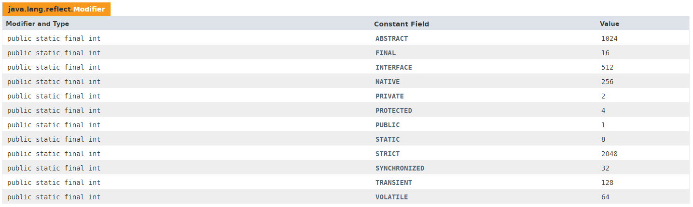

本文基于 JDK8，Oracle官网对反射的解释是
Reflection enables Java code to discover information about the fields, methods and constructors of loaded classes, and to use reflected fields, methods, and constructors to operate on their underlying counterparts, within security restrictions. The API accommodates applications that need access to either the public members of a target object (based on its runtime class) or the members declared by a given class. It also allows programs to suppress default reflective access control.
反射使 Java 代码可以发现有关已加载类的字段，方法和构造函数的信息，并在安全性限制内使用反射对这些字段，方法和构造函数进行操作。
简而言之，指在 Java 程序运行时
给定的一个类（Class）对象，通过反射获取这个类（Class）对象的所有成员结构。
给定的一个具体的对象，能够动态地调用它的方法及对任意属性值进行获取和赋值。
这种动态获取类的内容，创建对象、以及动态调用对象的方法及操作属性的机制为反射。即使该对象的类型在编译期间是未知，该类的 .class 文件不存在，也可以通过反射直接创建对象。
优势
增加程序的灵活性，避免将固有的逻辑程序写死到代码里
代码简洁，可读性强，可提高代码的复用率
劣势
相较直接调用，在量大的情景下反射性能下降
存在一些内部暴露和安全隐患
反射的源 java.lang.Class，Class 类是 JDK 对我们自定义的类和内置类的统一描述，Class 类中存储了类运行时的类型信息。在 Class 类，可以获取如下图所示类的公共信息。Class 类与反射的联系密切相关，Class 类和 java.lang.reflect 一起对反射提供了支持。

定义两个类 Boy 和 Person，Person 作为 Boy 的父类，作为接下演示这个部分反射用法的类。
Person.class
public class Person {
public String name;
private int age;
public void talk() {
System.out.println(name + "is talking");
}
}Boy.class
public class Boy extends Person {
public int height;
private int weight;
public static String description;
public Boy() {}
private Boy(int height) {
this.height = height;
}
public Boy(int height, int weight) {
this.height = height;
this.weight = weight;
}
public static void playBasketball() {
System.out.println("play basketball！");
}
public static void playBall(String ballType) {
System.out.println("play " + ballType + "！");
}
private void pickUpGirl() {
System.out.println("pick up girl！");
}
public int getWeight() {
return weight;
}
public int getHeight() {
return height;
}
}Class<Boy> clazz = Boy.class; // 通过类的 class 属性
Class<?> clazz2 = new Boy().getClass(); // 通过运行时类对象的 getClass 方法获取
Class<?> clazz3 = Class.forName("com.hncboy.corejava.reflection.Boy"); // 通过类的全限定名获取
Class<?> clazz4 = Main.class.getClassLoader().loadClass("com.hncboy.corejava.reflection.Boy"); // 通过类加载器获取 一个类的基本信息包含了修饰符，class 关键字，类名，父类，接口等信息，常用方法如下：
int modifier = clazz.getModifiers(); // 获取类的修饰符
Package pack = clazz.getPackage(); // 获取类的包名
String fullClassName = clazz.getName(); // 获取类的全路径名称
String simpleClassName = clazz.getSimpleName(); // 获取类的简单名称
ClassLoader classLoader = clazz.getClassLoader(); // 获取类的类加载器
Class<?>[] interfacesClasses = clazz.getInterfaces(); // 获取类实现的接口列表
Class<?> superClass = clazz.getSuperclass(); // 获取类的父类
Annotation[] annotations = clazz.getAnnotations(); // 获取类的注解列表通过一个测试类，测试以上方法：
public class Test {
public static void main(String[] args) {
Class<Boy> clazz = Boy.class;
// 获取类的修饰符，如果有多个修饰符，取相加后的结果
int modifiers = clazz.getModifiers();
System.out.println("modifiers: " + modifiers);
System.out.println("modifiers toString: " + Modifier.toString(modifiers));
// 获取类的包名
Package pack = clazz.getPackage();
System.out.println("package: " + pack);
// 获取类的全路径名称：包名 + 类名
String fullClassName = clazz.getName();
System.out.println("fullClassName: " + fullClassName);
// 获取类的简单名称：只有类名
String simpleClassName = clazz.getSimpleName();
System.out.println("simpleClassName: " + simpleClassName);
// 获取类的类加载器
ClassLoader classLoader = clazz.getClassLoader();
System.out.println("classLoader: " + classLoader);
// 获取类实现的接口列表
Class<?>[] interfacesClasses = clazz.getInterfaces();
System.out.println("interfacesClasses: " + Arrays.toString(interfacesClasses));
// 获取类的父类
Class<?> superClass = clazz.getSuperclass();
System.out.println("superClass: " + superClass);
// 获取类的注解列表
Annotation[] annotations = clazz.getAnnotations();
System.out.println("annotations: " + Arrays.toString(annotations));
}
}运行输出结果如下所示：
modifiers: 1
modifiers toString: public
package: package com.hncboy.corejava.reflection
fullClassName: com.hncboy.corejava.reflection.Boy
simpleClassName: Boy
classLoader: sun.misc.Launcher$AppClassLoader@18b4aac2
interfacesClasses: []
superClass: class com.hncboy.corejava.reflection.Person
annotations: []其中 getModifiers 以整数形式编码返回此类或接口的 Java 语言修饰符。通过查 java.lang.reflect.Modifier 的 API 可知，返回结果有如下类型，所有修饰符的值都为二进制运算的结果，通过位运算判断修饰符是最快的。 
字段的信息存储在 Field 类中， Field 提供有关类或接口的单个字段的信息，以及对它们的动态访问，并且可以对变量进行修改。反射字段可以是类（静态）字段或实例字段。常用方法如下：
Field[] fields = clazz.getFields(); // 获取类中所有的公有字段
Field[] declaredFields = clazz.getDeclaredFields(); // 获取类中定义的字段
Field nameField = clazz.getField("name"); // 获取指定名称的公有字段
Field declaredField = clazz.getDeclaredField("likeDesc"); // 获取指定名称类中定义的字段
int modifiersField = likeDescField.getModifiers(); // 获取字段的修饰
nameField.setAccessible(true); // 指定字段强制访问
nameField.set(person, "hncboy"); // 成员字段赋值（需指定对象）
descriptionField.set(null, "hncboy"); // 静态字段赋值通过一个测试类，测试以上方法：
public class Test {
public static void main(String[] args) throws Exception {
Class<Boy> clazz = Boy.class;
// 获取类中所有的公有字段，包含继承的
Field[] fields = clazz.getFields();
for (Field field : fields) {
System.out.println(field);
}
// 获取指定名称的公有字段，包含继承的
Field nameField = clazz.getField("name");
System.out.println(nameField);
// 获取本类中定义的所有字段，不包含继承的，包含私有的
Field[] declaredFields = clazz.getDeclaredFields();
for (Field field : declaredFields) {
System.out.println(field);
}
// 获取本类中指定名称类中定义的字段
Field weightField = clazz.getDeclaredField("weight");
System.out.println(weightField.getModifiers());
// 给指定字段赋值（需指定对象）
Boy boy = clazz.newInstance();
// 将该字段设置为强制访问
weightField.setAccessible(true);
weightField.set(boy, 120);
System.out.println(boy.getWeight());
// 静态字段赋值，静态字段不需要指定对象
Field descField = clazz.getField("description");
descField.set(null, "静态属性");
System.out.println(Boy.description);
}
}运行输出结果如下所示：
public int com.hncboy.corejava.reflection.Boy.height
public static java.lang.String com.hncboy.corejava.reflection.Boy.description
public java.lang.String com.hncboy.corejava.reflection.Person.name
public java.lang.String com.hncboy.corejava.reflection.Person.name
public int com.hncboy.corejava.reflection.Boy.height
private int com.hncboy.corejava.reflection.Boy.weight
public static java.lang.String com.hncboy.corejava.reflection.Boy.description
2
120
静态属性在直接访问私有 private 变量 weight 时，会报如下的错误，不能访问 Boy 类的私有变量。通过 Field 继承的 java.lang.reflect.AccessibleObject 类中的 setAccessible(boolean flag) 可以开启权限，setAccessible 方法通过调用 native setAccessible0 方法取消 Java 语言访问检查权限。
Exception in thread "main" java.lang.IllegalAccessException: Class com.hncboy.corejava.reflection.Test can not access a member of class com.hncboy.corejava.reflection.Boy with modifiers "private"
at sun.reflect.Reflection.ensureMemberAccess(Reflection.java:102)
at java.lang.reflect.AccessibleObject.slowCheckMemberAccess(AccessibleObject.java:296)
at java.lang.reflect.AccessibleObject.checkAccess(AccessibleObject.java:288)
at java.lang.reflect.Field.set(Field.java:761)
at com.hncboy.corejava.reflection.Test.main(Test.java:41)
方法的信息存储在 Method 类中， Method 提供有关类或接口上单个方法的信息，以及对单个方法的访问。反射方法可以是类方法或实例方法（包括抽象方法）。常用方法如下：
Method[] methods = clazz.getMethods(); // 获取类中所有的公有方法
Method[] declaredMethods = clazz.getDeclaredMethods(); // 获取本类的所有方法
Method talkMethod = clazz.getMethod("talk", String.class); // 获取类中指定名称和参数的公有方法
Method pugMethod = clazz.getDeclaredMethod("pickUpGirls"); // 获取本类中定义的指定名称和参数的方法
int modifiers = pugMethod.getModifiers(); // 获取方法的修饰符
talkMethod.invoke(boy, "I tell you"); // 指定对象进行成员方法的调用
pugMethod.setAccessible(true); // 指定方法的强制访问
pickUpGirlsMethod.invoke(null); // 指定静态方法的调用通过一个测试类，测试以上方法：
public class Test {
public static void main(String[] args) throws Exception {
Class<Boy> clazz = Boy.class;
// 获取类中定义的方法，包含继承的(Object)
Method[] methods = clazz.getMethods();
for (Method method : methods) {
System.out.println(method);
}
// 获取类中指定的方法（无参）
Method talkMethod = clazz.getMethod("talk");
System.out.println(talkMethod.getName());
// 获取类中指定的方法（有参）
Method playMethod = clazz.getMethod("playBall", String.class);
System.out.println(playMethod.getName());
// 获取本类中的所有方法，不包含继承，包含私有的
Method[] declaredMethods = clazz.getDeclaredMethods();
for (Method method : declaredMethods) {
System.out.println(method);
}
// 获取本类中特定的的方法
Method declaredMethod = clazz.getDeclaredMethod("pickUpGirl");
System.out.println(declaredMethod.getName());
// 底层是基于构造器的创建无参构造器
Boy boy = clazz.newInstance();
// 调用公有有参方法
playMethod.invoke(boy, "足球");
// 调用私有无参方法，需要设置强制访问
declaredMethod.setAccessible(true);
declaredMethod.invoke(boy);
// 调用静态方法
Method playBasketBallMethod = clazz.getDeclaredMethod("playBasketball");
playBasketBallMethod.invoke(null);
}
}运行输出结果如下所示：
public static void com.hncboy.corejava.reflection.Boy.playBasketball()
public int com.hncboy.corejava.reflection.Boy.getWeight()
public int com.hncboy.corejava.reflection.Boy.getHeight()
public static void com.hncboy.corejava.reflection.Boy.playBall(java.lang.String)
public void com.hncboy.corejava.reflection.Person.talk()
public final void java.lang.Object.wait() throws java.lang.InterruptedException
public final void java.lang.Object.wait(long,int) throws java.lang.InterruptedException
public final native void java.lang.Object.wait(long) throws java.lang.InterruptedException
public boolean java.lang.Object.equals(java.lang.Object)
public java.lang.String java.lang.Object.toString()
public native int java.lang.Object.hashCode()
public final native java.lang.Class java.lang.Object.getClass()
public final native void java.lang.Object.notify()
public final native void java.lang.Object.notifyAll()
talk
playBall
private void com.hncboy.corejava.reflection.Boy.pickUpGirl()
public static void com.hncboy.corejava.reflection.Boy.playBasketball()
public int com.hncboy.corejava.reflection.Boy.getWeight()
public int com.hncboy.corejava.reflection.Boy.getHeight()
public static void com.hncboy.corejava.reflection.Boy.playBall(java.lang.String)
pickUpGirl
play 足球！
pick up girl！
play basketball！在通过 getMethods 获取所有父类的公有方法，Boy 类的父类包含 Person 类和 Object 类，所以总共输出 14 个公有方法。getMethod 或 getDeclaredMethod 方法获取指定方法名无参的方法时，参数可以省略，直接传入方法名，获取带参数的方法时，如果类型错误会报 NoSuchMethodException 异常，如下所示。通过 method 的 invoke 方法传入实例对象调用实例方法，调用静态方法传入 null 即可。
Exception in thread "main" java.lang.NoSuchMethodException: com.hncboy.corejava.reflection.Boy.playBall(int)
at java.lang.Class.getMethod(Class.java:1786)
at com.hncboy.corejava.reflection.Test.main(Test.java:29)构造器的信息存储在 Constructor 类中， Constructor 提供有关类的单个构造函数的信息，以及对类的访问。常用方法如下：
Constructor<?>[] constructors = clazz.getConstructors(); // 获取类中所有的公有构造器
Constructor<?>[] declaredConstructors = clazz.getDeclaredConstructors(); // 获取类中所有的构造器
Constructor<?> declaredConstructor = clazz.getDeclaredConstructor(); // 获取类中无参的构造器
Constructor<?> constructor = clazz.getDeclaredConstructor(String.class, String.class); // 获取类中有参构造器
int modifiers = constructor.getModifiers(); // 获取构造器的修饰符
declaredConstructor.newInstance(); // 构造器实例对象
declaredConstructor.setAccessible(true); // 指定构造器的强制访问
constructor.newInstance("hncboy"); // 有参构造调用
clazz.newInstance(); // 直接调用默认无参构造通过一个测试类，测试以上方法：
public class Test {
public static void main(String[] args) throws Exception {
Class<Boy> clazz = Boy.class;
// 获取类中所有的公有构造器
Constructor<?>[] constructors = clazz.getConstructors();
for (Constructor<?> constructor : constructors) {
System.out.println(constructor);
}
// 获取类中所有的构造器，包含私有的
Constructor<?>[] declaredConstructors = clazz.getDeclaredConstructors();
for (Constructor<?> constructor : declaredConstructors) {
System.out.println(constructor);
}
// 获取类中无参的构造器
Constructor<?> noParamsConstructor = clazz.getDeclaredConstructor();
System.out.println(noParamsConstructor);
// 获取类中指定参数构造器
Constructor<?> constructor1 = clazz.getDeclaredConstructor(int.class);
Constructor<?> constructor2 = clazz.getDeclaredConstructor(int.class, int.class);
System.out.println(noParamsConstructor.getModifiers());
System.out.println(constructor1.getModifiers());
System.out.println(constructor2.getModifiers());
// 调用构造器
Boy boy = (Boy) noParamsConstructor.newInstance();
System.out.println(boy);
constructor1.setAccessible(true);
boy = (Boy) constructor1.newInstance(177);
System.out.println(boy.getHeight());
}
}运行输出结果如下所示：
public com.hncboy.corejava.reflection.Boy(int,int)
public com.hncboy.corejava.reflection.Boy()
public com.hncboy.corejava.reflection.Boy(int,int)
private com.hncboy.corejava.reflection.Boy(int)
public com.hncboy.corejava.reflection.Boy()
public com.hncboy.corejava.reflection.Boy()
1
2
1
com.hncboy.corejava.reflection.Boy@4b67cf4d
177getConstructors 方法获取类中的所有公有构造器，构造器不能继承，所有只能获取本类中的。getDeclaredConstructors 获取本类的所有构造器，包含私有的。在获取特定参数构造器时，传入的要与构造器的参数一样，如 int.class 不能写成 Integer.class，因为自动拆箱是在编译过程中的，而反射是在运行期间的。
通过反射，可使用 Class.newInstance() 或 Constructor.newInstance() 两种方式创建对象。Class 类下的 newInstance 是弱类型，只能调用无参的构造方法，如果没有默认构造方法，会抛出 InstantiationException 实例化异常，通过源码可知，该方法的本质上是 return tmpConstructor.newInstance((Object[])null); ，也是调用 Constructor 的 newInstance 方法 。 而 Constructor 类下的 newInstance 可以调用任意参数的构造器。
单例模式
私有化构造函数
全局唯一的公有访问点
对外提供获取实例的静态方法
public class Hungry {
private static final Hungry INSTANCE = new Hungry();
private Hungry() {}
public static Hungry getInstance() {
return INSTANCE;
}
}public class Lazy {
private static Lazy instance;
private Lazy() {}
public static Lazy getInstance() {
if (instance == null) {
synchronized (Lazy.class) {
if (instance == null) {
instance = new Lazy();
}
}
}
return instance;
}
}public class SingletonDestroyer {
public static void main(String[] args) throws Exception {
// 破坏懒汉模式
Lazy lazyInstance = Lazy.getInstance();
Constructor<Lazy> lazyConstructor = Lazy.class.getDeclaredConstructor();
lazyConstructor.setAccessible(true);
Lazy lazyInstanceReflect = lazyConstructor.newInstance();
System.out.println(lazyInstance);
System.out.println(lazyInstanceReflect);
// 破坏饿汉模式
Hungry hungryInstance = Hungry.getInstance();
Constructor<Hungry> hungryConstructor = Hungry.class.getDeclaredConstructor();
hungryConstructor.setAccessible(true);
Hungry hungryInstanceReflect = hungryConstructor.newInstance();
System.out.println(hungryInstance);
System.out.println(hungryInstanceReflect);
}
}运行结果如下，通过反射机制可以破环单例模式，将私有化的构造器通过强制访问创建对象。
com.hncboy.corejava.reflection.Lazy@4b67cf4d
com.hncboy.corejava.reflection.Lazy@7ea987ac
com.hncboy.corejava.reflection.Hungry@12a3a380
com.hncboy.corejava.reflection.Hungry@29453f44IOC(Inversion of Control) 控制反转，他是一种设计思想，并非实际的技术，最核心的思想就是将预先设计的对象实例创建的控制权交给程序(IOC 容器)。 IOC 容器本质上是一个 K-V 结构的 Map。IOC 的实现原理就是工厂模式加反射机制。
通过 Spring 文档可查看 Bean 实例的三种创建方式：
步骤如下：
public class A {
public A() {
System.out.println("调用 A 的无参构造器");
}
public static B createBInstance() {
System.out.println("调用 A 的静态方法 createBInstance");
return new B();
}
public C createCInstance() {
System.out.println("调用 A 的实例方法 createCInstance");
return new C();
}
}
class B {}
class C {}通过模拟该配置文件来进行对象的创建
<?xml version="1.0" encoding="UTF-8"?>
<beans xmlns="http://www.springframework.org/schema/beans"
xmlns:xsi="http://www.w3.org/2001/XMLSchema-instance"
xsi:schemaLocation="http://www.springframework.org/schema/beans http://www.springframework.org/schema/beans/spring-beans.xsd">
<!-- 创建方式1：无参构造器创建 A 对象-->
<bean id="a" class="com.hncboy.corejava.reflection.A"/>
<!-- 创建方式2：静态工厂创建，调用 A 的 createBObj 方法来创建名为 b 的对象放入容器 -->
<bean id="b" class="com.hncboy.corejava.reflection.A" factory-method="createBInstance"/>
<!-- 创建方式3：实例工厂创建，调用实例 a 的 createBObj 方法来创建名为 c 的对象放入容器 -->
<bean id="c" factory-bean="a" factory-method="createCInstance"/>
</beans>/**
* 存放 bean 的基本信息
*/
public class BeanConfig {
private String id;
private String clazz;
private String factoryMethod;
private String factoryBean;
/* getter、setter 省略 */
}/**
* 定义 map 存放 map
*/
public class IOCContainer {
private static Map<String, Object> container = new HashMap<>();
public static void putBean(String id, Object object) {
container.put(id, object);
}
public static Object getBean(String id) {
return container.get(id);
}
}创建方式1：无参构造器创建。bean 的内容包括 id 和 clazz
创建方式2：静态工厂创建。bean 的内容包括 id 和 factory-method
创建方式3：实例工厂创建。bean 的内容包括 id，factory-bean 和 factory-method
public class Init {
public static void main(String[] args) throws Exception {
List<BeanConfig> beanConfigs = parseXmlToBeanConfig();
// 将解析的 BeanConfig 进行实例化
for (BeanConfig beanConfig : beanConfigs) {
if (beanConfig.getClazz() != null) {
Class<?> clazz = Class.forName(beanConfig.getClazz());
if (beanConfig.getFactoryMethod() != null) {
// 创建方式2：静态工厂创建
Method method = clazz.getDeclaredMethod(beanConfig.getFactoryMethod());
IOCContainer.putBean(beanConfig.getId(), method.invoke(null));
} else {
// 创建方式1：无参构造器创建
IOCContainer.putBean(beanConfig.getId(), clazz.newInstance());
}
} else if (beanConfig.getId() != null) {
// 创建方式3：实例工厂创建
Object object = IOCContainer.getBean(beanConfig.getFactoryBean());
Method method = object.getClass().getDeclaredMethod(beanConfig.getFactoryMethod());
IOCContainer.putBean(beanConfig.getId(), method.invoke(object));
} else {
System.out.println("缺少配置，无法创建对象！");
}
}
}
/**
* 模拟解析 XML 中的 bean
*
* @return
*/
private static List<BeanConfig> parseXmlToBeanConfig() {
List<BeanConfig> beanConfigs = new ArrayList<>();
// 模拟无参构造器创建对象
BeanConfig beanConfig1 = new BeanConfig();
beanConfig1.setId("a");
beanConfig1.setClazz("com.hncboy.corejava.reflection.A");
beanConfigs.add(beanConfig1);
// 模拟静态工厂创建对象
BeanConfig beanConfig2 = new BeanConfig();
beanConfig2.setId("b");
beanConfig2.setClazz("com.hncboy.corejava.reflection.A");
beanConfig2.setFactoryMethod("createBInstance");
beanConfigs.add(beanConfig2);
// 模拟实例工厂创建对象
BeanConfig beanConfig3 = new BeanConfig();
beanConfig3.setId("c");
beanConfig3.setFactoryBean("a");
beanConfig3.setFactoryMethod("createCInstance");
beanConfigs.add(beanConfig3);
return beanConfigs;
}
}运行结果如下：
调用 A 的无参构造器
调用 A 的静态方法 createBInstance
调用 A 的实例方法 createCInstance